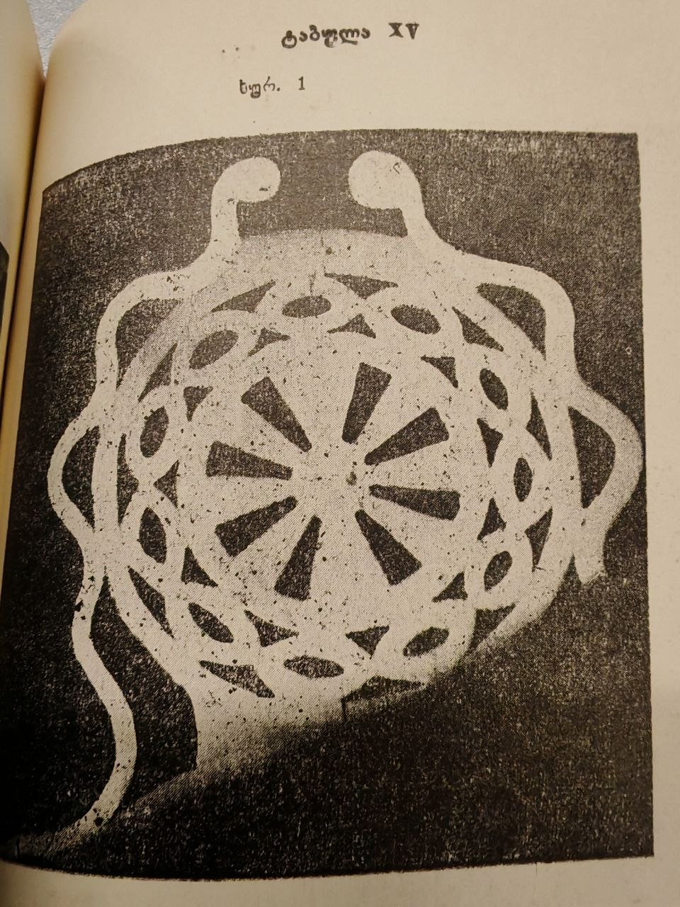

The inspiration for this track came from a wooden ornament that caught my attention because of its repetitive pattern. At first, it feels like a simple loop, but the deeper you look into it, the more you begin to notice soft and slow touches of progression hidden inside the repetition. This idea not only describes the concept of the track, but also reflects my artistic vision and technique. The foundation of the composition is built on repetitive melodies that slowly evolve over time. The progression is almost unnoticeable, but exactly because of that, it creates a hypnotic feeling that draws the listener deeper into the sound and keeps them attached to it. That was the exact feeling I experienced while looking at the picture, which I used as a graphical score for my interpretation.
